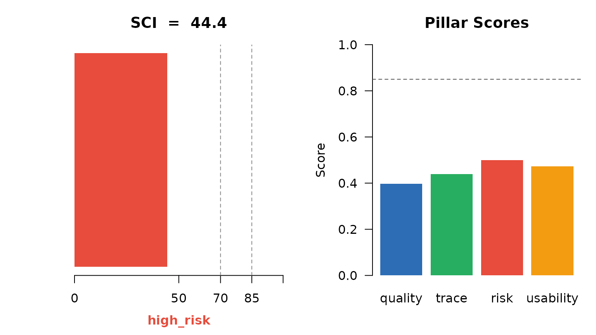
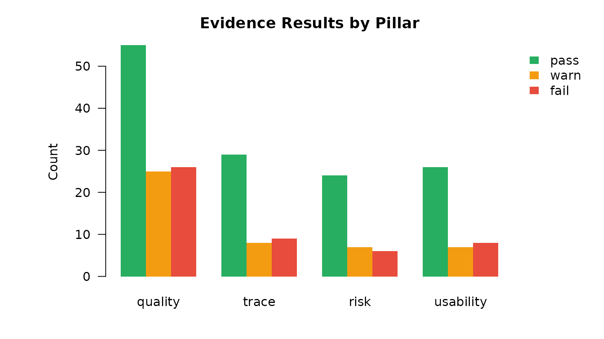
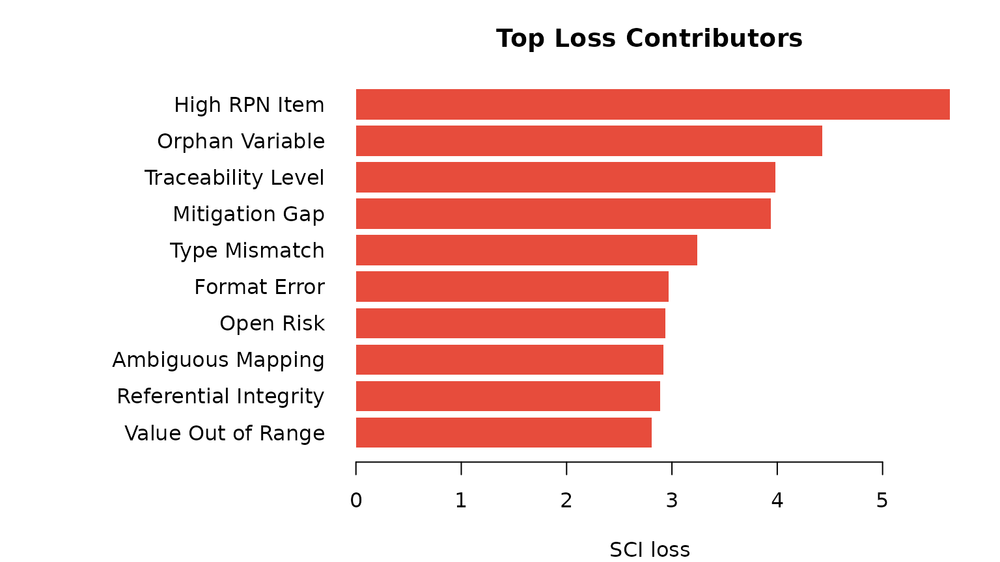
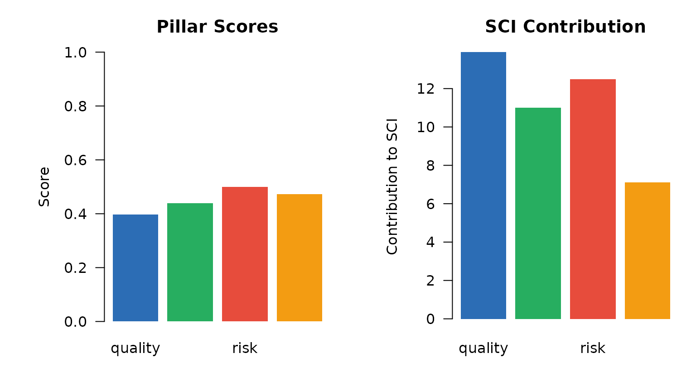
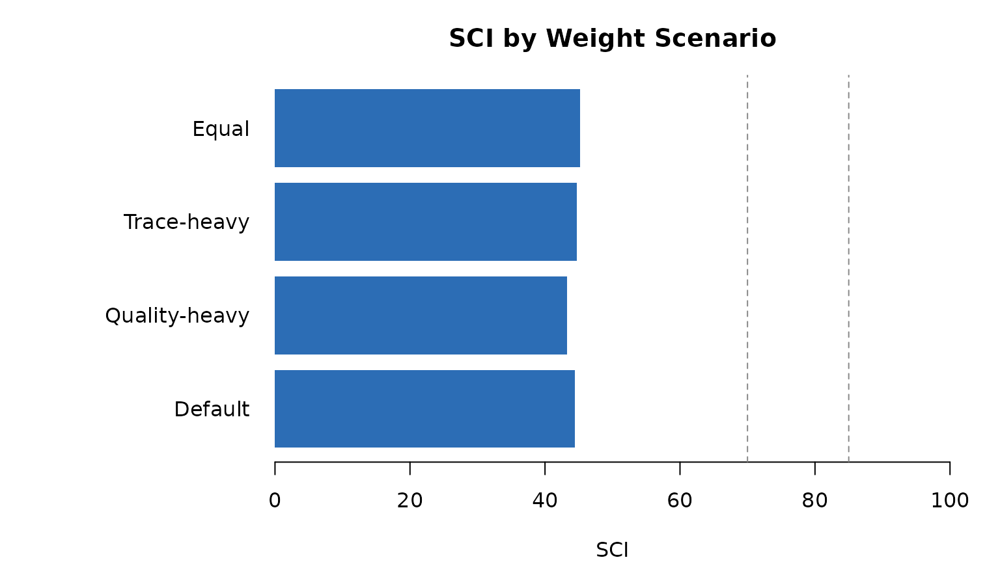
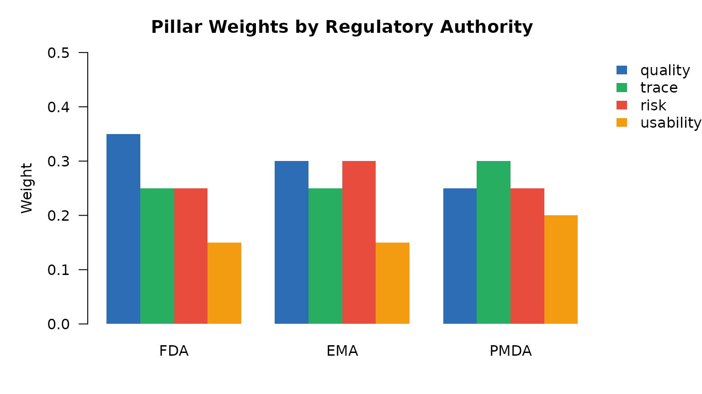

r4subui provides an eight-tab Shiny dashboard. This
vignette shows the output of each tab using the built-in demo data.
library(r4subui)
library(r4subcore)
library(r4subscore)
library(r4subrisk)
library(r4subtrace)
library(r4subprofile)
library(r4subdata)
data(evidence_pharma)
ev <- evidence_pharma
# Pre-compute shared objects
pillar_scores <- compute_pillar_scores(ev)
sci <- compute_sci(pillar_scores)
cols <- c(quality = "#2C6DB5", trace = "#27AE60",
risk = "#E74C3C", usability = "#F39C12")Tab 1 — Overview
SCI score, decision band, and per-pillar score cards.
scores_vec <- setNames(pillar_scores$pillar_score, pillar_scores$pillar)
band_col <- c(ready = "#27AE60", minor_gaps = "#F39C12",
conditional = "#E67E22", high_risk = "#E74C3C")[[sci$band]]
par(mfrow = c(1, 2), mar = c(4, 5, 3, 1))
barplot(sci$SCI, col = band_col, border = NA, xlim = c(0, 100),
horiz = TRUE, axes = FALSE,
main = paste0("SCI = ", round(sci$SCI, 1)))
axis(1, at = c(0, 50, 70, 85, 100))
abline(v = c(70, 85), lty = 2, col = "#888888")
mtext(sci$band, side = 1, line = 2.5, col = band_col, font = 2)
barplot(scores_vec[names(cols)], col = cols[names(scores_vec)],
border = NA, ylim = c(0, 1), las = 1,
ylab = "Score", main = "Pillar Scores")
abline(h = 0.85, lty = 2, col = "#555555")
Overview: SCI and pillar scores
Tab 2 — Evidence Explorer
Filterable table of all evidence rows.
with(ev, table(indicator_domain, result))
#> result
#> indicator_domain fail na pass warn
#> quality 26 14 55 25
#> risk 6 2 24 7
#> trace 9 1 29 8
#> usability 8 3 26 7
domains <- c("quality", "trace", "risk", "usability")
results <- c("pass", "warn", "fail")
result_cols <- c(pass = "#27AE60", warn = "#F39C12", fail = "#E74C3C")
mat <- sapply(results, function(r)
sapply(domains, function(d)
sum(ev$indicator_domain == d & ev$result == r, na.rm = TRUE)
)
)
par(mar = c(4, 7, 3, 6))
barplot(t(mat), beside = TRUE, col = result_cols,
names.arg = domains, las = 1, border = NA,
ylab = "Count", main = "Evidence Results by Pillar")
legend("topright", legend = results, fill = result_cols,
border = NA, bty = "n", inset = c(-0.18, 0), xpd = TRUE)
Evidence: result distribution by pillar
Tab 3 — Indicator Scores
Per-indicator scores and SCI loss contributors.
expl <- sci_explain(ev)
top_loss <- head(expl$indicator_contributions, 10)
par(mar = c(4, 14, 3, 2))
barplot(rev(top_loss$loss),
names.arg = rev(top_loss$indicator_name),
horiz = TRUE, las = 1, col = "#E74C3C", border = NA,
xlab = "SCI loss", main = "Top Loss Contributors")
Top 10 indicators by SCI loss contribution
Tab 4 — Pillar Detail
Pillar scores and their contribution to the SCI.
contrib <- expl$pillar_contributions # has pillar, pillar_score, weight, contribution, loss
par(mfrow = c(1, 2), mar = c(4, 6, 3, 1))
barplot(setNames(contrib$pillar_score, contrib$pillar),
col = cols[contrib$pillar], border = NA,
ylim = c(0, 1), las = 1,
ylab = "Score", main = "Pillar Scores")
barplot(setNames(contrib$contribution, contrib$pillar),
col = cols[contrib$pillar], border = NA, las = 1,
ylab = "Contribution to SCI", main = "SCI Contribution")
Pillar score and SCI contribution
Tab 5 — Sensitivity Analysis
SCI stability under alternative pillar weight scenarios.
weight_grid <- data.frame(
quality = c(0.35, 0.50, 0.25, 0.25),
trace = c(0.25, 0.20, 0.40, 0.25),
risk = c(0.25, 0.20, 0.25, 0.25),
usability = c(0.15, 0.10, 0.10, 0.25)
)
scenario_labels <- c("Default", "Quality-heavy", "Trace-heavy", "Equal")
sens <- sci_sensitivity_analysis(ev, weight_grid)
par(mar = c(4, 11, 3, 2))
barplot(setNames(sens$SCI, scenario_labels),
horiz = TRUE, las = 1, col = "#2C6DB5", border = NA,
xlim = c(0, 100), xlab = "SCI",
main = "SCI by Weight Scenario")
abline(v = c(70, 85), lty = 2, col = "#888888")
SCI sensitivity to weight variations
Tab 6 — Risk Register
data(risk_register_pharma)
rr <- create_risk_register(risk_register_pharma)
risk_sc <- compute_risk_scores(rr)
rd <- risk_sc$risk_distribution
risk_cols <- c(low = "#27AE60", medium = "#F39C12",
high = "#E67E22", critical = "#E74C3C")
rd_named <- setNames(rd$n, rd$risk_level)
rd_plot <- rd_named[intersect(names(risk_cols), names(rd_named))]
par(mar = c(4, 5, 3, 2))
barplot(rd_plot, col = risk_cols[names(rd_plot)], border = NA,
ylab = "Count", las = 1,
main = paste0("Risk Distribution | Mean RPN = ", risk_sc$mean_rpn))Risk distribution by severity level
Tab 7 — Traceability
data(adam_metadata); data(sdtm_metadata); data(trace_mapping)
ctx <- r4sub_run_context(study_id = "CDISCPILOT01", environment = "DEV")
#> ℹ Run context created: "R4S-20260317000955-wl4dieex"
tm <- build_trace_model(adam_metadata, sdtm_metadata, trace_mapping)
ev_trace <- trace_model_to_evidence(tm, ctx = ctx)
#> ✔ Evidence table created: 47 rows
res_counts <- table(ev_trace$result)
trace_cols <- c(pass = "#27AE60", warn = "#F39C12",
fail = "#E74C3C", na = "#BDC3C7")
rc <- res_counts[intersect(names(trace_cols), names(res_counts))]
par(mar = c(4, 5, 3, 2))
barplot(rc, col = trace_cols[names(rc)], border = NA,
ylab = "Count", las = 1,
main = paste0("Trace Results | ", nrow(ev_trace), " indicators"))Traceability: result distribution
Tab 8 — Authority Profile
profiles <- list(
FDA = submission_profile("FDA", "NDA"),
EMA = submission_profile("EMA", "MAA"),
PMDA = submission_profile("PMDA", "NDA_JP")
)
weight_mat <- sapply(profiles, function(p) p$pillar_weights)
pillars <- rownames(weight_mat)
par(mar = c(4, 5, 3, 6))
barplot(weight_mat, beside = TRUE,
col = cols[pillars], border = NA, ylim = c(0, 0.5),
ylab = "Weight", las = 1,
main = "Pillar Weights by Regulatory Authority")
legend("topright", legend = pillars, fill = cols[pillars],
border = NA, bty = "n", inset = c(-0.22, 0), xpd = TRUE)
Pillar weights by regulatory authority
Launch the live dashboard
r4sub_app(evidence = evidence_pharma)